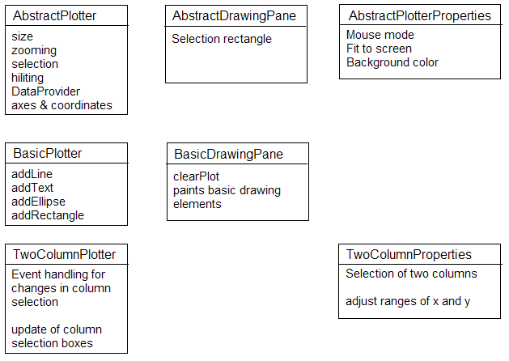
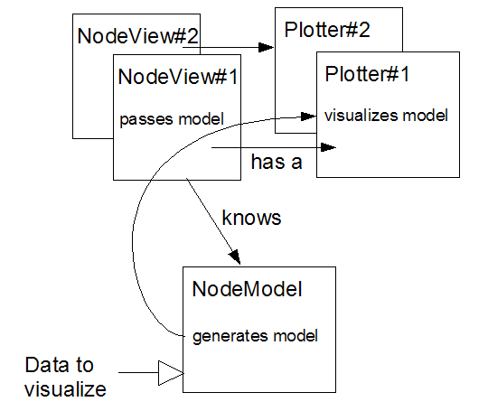

The KNIME visualization framework supports an easy-to-use implementation of visualizations. The following sections provide an introduction into this framework (Overview, Framework) and links to already existing views (Implementations).
The basic elements of the visualization framework is a so-called plotter. A plotter consists of four components:
In the following the scroll pane is ignored since it is transparent to the user. The remaining three components follow the Model-View-Controller pattern.
The plotter acts as the controller holding the drawing pane and the properties, translating the model data into a visual model for the drawing pane and forwarding changes in the properties to the drawing pane. The plotter provides a default constructor, where the adequate drawing pane and properties are initialized and, where it makes sense, the plotter provides a constructor where the drawing pane and the properties are passed allowing to freely combine the components of the plotter.
The drawing pane is the view and simply displays the already mapped data which has to be set by the plotter. In contrast to the hiliting, which is done by the plotter, the administration of selected elements might be done by the drawing pane. In general it is recommended to keep the drawing pane as simple as possible and do the logic in the plotter.
The properties are organized in tabs to allow different combinations of property elements. The constructor simply instantiates the necessary tabs and add them to the property panel. Furthermore it has to provide access to the control elements in the tabs, since the plotter normally registers the listeners to the property control elements.
A plotter may have a X (horizontal) axis and/or a Y (vertical) axis. They can be nominal or numeric whereby the latter may consist of integer or double values only.
The abstract visualization framework is organized in more or less three layers where each layer provides more functionality. Illustration 2 gives a quick overview over the three abstract layers, which are described in the following.
The core of the visualization framework is the AbstractPlotter. It provides all core functionality common to all plotters in the visualization framework, i.e.
The zooming, moving and resizing is all done in the abstract plotter. Since the selection depends on the displayed elements the selection mouse events are forwarded to the methods
selectClickedElement(Point p) selectElementsIn(Rectangle r) clearSelection()
The AbstractPlotter is also responsible for the HiLiting. It holds a HiLiteHandler which is accessible via the delegate methods
delegateAddHiLiteListener delegateGetHiLiteKeys delegateHiLite delegateIsHiLite delegateRemoveAllHiLiteListener delegateRemoveHiLiteListener delegateUnHiLite delegateUnHiLiteAll
Since the hiliting depends on the underlying elements the HiLiteListener methods are abstract:
hiLite hiLiteSelected unHiLite unHiLiteSelected
The most important abstract methods of the AbstractPlotter are
updatePaintModel and updateSize
In the updatePaintModel a new model is available: new selection of columns, new underlying dataset or whatever and the mapping of all data has to be done, properties have to be updated and so on. In updateSize only the size of the plotter has changed and only the mapping has to be re-calculated. The mapping is done with the help of the axes. An axis holds a coordinate which is responsible for the mapping from domain values to mapped values. A coordinate is created with a DataColumnSpec (numeric columns must contain the lower and upper bound, nominal columns must contain the possible values)
Coordinate.createCoordinate(DataColumnSpec colSpec)
Other possibilities to create the coordinates are:
createXCoordinate(double min, double max) createXCoordinate(int min, int max) createNominalXCoordinate(Set<DataCell> possibleValues)
Same methods are available for the y axis. The mapped value can be retrieved with
getMappedXValue(DataCell domainValue) getMappedYValue(DataCell domainValue)
The AbstractPlotter itself doesn't create any axes or coordinates but provides all functionality to do so. Still unanswered is the question how the plotter can access the data to visualize, especially how the connection to the underlying NodeModel is realized. For this purpose a new interface DataProvider was introduced. The DataProvider has one method:
getDataArray(int index)
A NodeModel implementing this interface should convert the input data into a DataArray and return it in this method. The index allows several different data arrays , e.g. from different inports, in the plotter to be visualized. Even if your node creates a visualization model of the data which doesn't fit into a DataArray and there is no need to implement the DataProvider interface, the way how NodeModel, NodeView and Plotter are connected should be the same and is described in the following.
The NodeModel generates the visualization model from the incoming data. The NodeView, which "knows" the NodeModel and the Plotter should pass the visualization model from the NodeModel (which for this purpose has to provide a getter) to the plotter (which must provide a setter). Furthermode, each NodeView instance should have its own plotter instance, since graphical components can not be shared. The best way to realize this is to pass a plotter instance to the NodeView's constructor and in the NodeFactory#getNodeView create a new NodeView with a new Plotter.
As pointed out above the drawing pane simply draws the mapped elements, hence, the single abstract method to implement is
paintContent(Graphics g)
This means that the data structures to be visualized have to be stored in the drawing pane.
The AbstractProperties consists of the default tab only, i.e. a selection of the mouse mode (Selection, Zooming, Moving), a fit to screen button and a possibility to change the background color of the drawing pane. Normally, you would extend the properties you need, call super() in the constructor and then add your own tab.
The idea behind the BasicPlotter is to provide a small fraction of the functionality known from "R" or "GnuPlot". If you have some basic elements, such as lines, ellipses, rectangles, you want to add to your view you can use the BasicPlotter.
addLine(double[] yValues, Color color, Stroke stroke) addLine(double[] xValues, double[] yValues, Color color, Stroke stroke) addRectangle(double x, double y, int width, int height, Color color, Stroke stroke, boolean filled) addEllipse(double xCenter, double yCenter, double width, double height, Color color, Stroke stroke, boolean filled)
The usage of the BasicPlotter methods only makes sense, if you know the domain values of the elements but have no clue about the mapped values. One example is a ScatterPlot where you want to add a regression line. Here you only know the domain values of the line and you can simply add a line to the plotter with the domain values. The BasicPlotter will map the domain values to the drawing pane’s size. If you set preserve = true in the AbstractPlotter the existing ranges of the coordinates won't be adapted. If you set preserve to false, the ranges will be adapted if, fior example, the added rectangle is larger than the existing range of the coordinates. Another possibility is to add a DataArray which will be visualized by a line connecting all values in the columns, where the row number is the x axis and the value of the column is painted at the y axis. addLine(DataArray data, int columnIndex, Color color, Stroke stroke)
If you want to add a specific element to the basic plotter you can extend the BasicDrawingElement or the Basic2DDrawingElement (described below) with
addBasicDrawingElement(BasicDrawingElement element)
A BasicDrawingElement consists of a number of domain values and the referring mapped points, a color and a stroke. Whenever the size is changed, the BasicPlotter takes the domain values and maps them to the current drawing pane size. How the BasicDrawingElement is actually painted (depending on the given points) is defined in the paint method which is abstract. The Basic2DDrawingElement extends the BasicDrawingElement by holding a flag, whether the form should be filled or not. Thus, if you want to add, for example, a triangle you have to extend the B asic2DDrawingElement; then assert that the given points are the left corner, the top and the right corner and define the paint method to connect the points or fill the shape.
You can add BasicDrawingElements to the BasicDrawingPane, get them and clear the BasicDrawingElements with the following methods:
addDrawingElement(BasicDrawingElement element) getDrawingElements() clearPlot()
The TwoColumnPlotter comes with all functionality necessary if you want to display 2 columns of your data. The TwoColumnProperties consist of two select boxes for the columns and an adjustment for the ranges of the columns. The TwoColumnPlotter listens to the properties and does the appropriate changes and notifications for all extending classes. Thus, if you extend from the TwoColumnPlotter and your Properties extend from the TwoColumnProperties you just have to implement the updatePaintModel and updateSize methods. The updatePaintModel is called, whenever the column selection changes.
As already mentioned, the Properties are organized in tabs, i.e. for each specific plotter property exist a tab which can easily be reused if the same adjustments are needed for your implementation. For example the ScatterMatrix uses the same properties for the appearance but obviously a different column selection mechanism.
The DefaultVisualizationNode provides a convenient way to embed a plotter into a KNIME Node. The DefaultVisualizationNodeModel stores the input data at port 0 into a data array and returns it with getDataArray(int index). It implements the load and save internals where it saves/loads exactly this data array. The DefaultVisualizationNode also has a dialog where the maximum number of rows to visualize could be specified. Default values 2.500. In addition all columns are excluded, which are not compatible with DoubleValue or NominalValue and NominalValues with no or more than 60 possible values.
The DefaultVisualizationNodeView comes with two different constructors, each taking a plotter as an argument:
DefaultVisualizationNodeView(NodeModel model, AbstractPlotter plotter) DefaultVisualizationNodeView(NodeModel model, AbstractPlotter plotter, String title)
The difference between the two constructors is, that the latter places the plotter in a tab with the passes title. You may add additional plotters to the NodeView using
addVisualization(AbstractPlotter plotter, String title)
which puts the passed plotter in a tab with the passed title and adds it to the NodeView. The DefaultVisualizationNodeView maintains the plotters, i. e. sets the model as the DataProvider, gets the HiliteHandler from the model and adds it to the plotter, etc. If you have a simple plotter which visualizes the data from one inport you can use the DefaultVisualizationNode by simply writing your own NodeFactory and return the DefaultNodeModel as the NodeModel and the DefaultVisualizationNodeView with your plotter as the NodeView.
If the DefaultVisualizationNodeView doesn't fit your needs you have to take care that:
getJMenuBar().add(plotter.getHiLiteMenu());